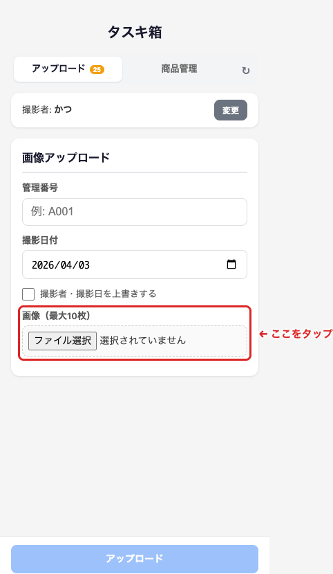
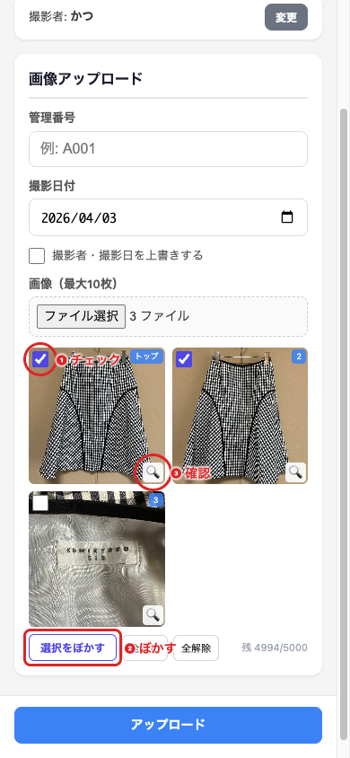
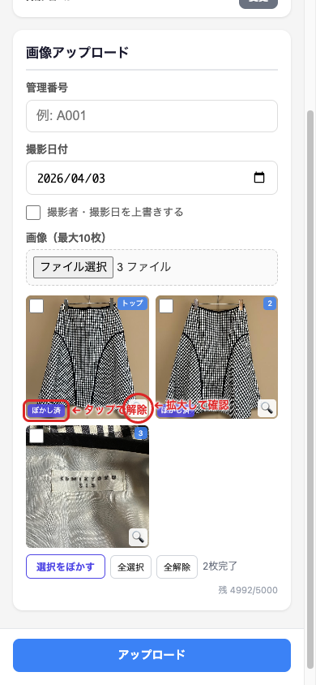
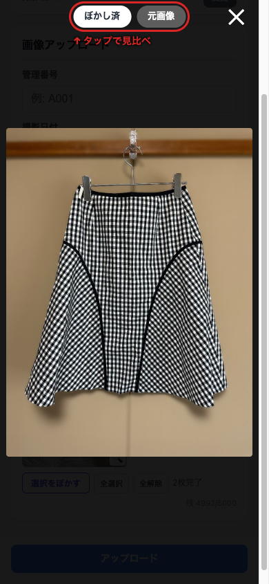

操作ガイド ― 撮影担当者向け
商品の形を自動で見分けて、背景だけにぼかしをかけます。
| 画像の種類 | ぼかし | 理由 |
|---|---|---|
| 前面の全体写真 | 必須 | 背景（壁・床）が映るため |
| 背面の全体写真 | 必須 | 背景（壁・床）が映るため |
| 背景が映り込む写真 （裾・袖・全体の斜めなど） | 必須 | 背景が見えている画像すべて |
| タグ・ブランドラベル （接写・アップ） | 不要 | 背景がほぼ映らないため |
| 素材・生地の接写 | 不要 | 背景がほぼ映らないため |

赤枠の「ファイル選択」ボタンをタップして、撮影した画像を選びます。
一度に最大10枚まで選べます。
選ぶと画像のプレビューが表示されます。

❶ チェック ─ ぼかしたい画像の左上をタップしてチェックを入れます。画像タップでも切り替わります。
全選択 全解除 でまとめて操作もできます。
❷ ぼかす ─ 選択をぼかす をタップすると処理が始まります。
❸ 確認 ─ 🔍をタップすると大きく表示して確認できます。

処理が終わると、画像に ぼかし済 と表示されます。
🔍をタップして拡大表示で仕上がりを確認してください。
やり直したい場合は ぼかし済 をタップすると元に戻ります。
確認OKなら、管理番号を入力して「アップロード」をタップしてください。

拡大表示の画面上部に赤枠の ぼかし済 元画像 ボタンがあります。
タップするとぼかし前後を見比べることができます。
確認が終わったら ✕ で閉じてください。
| 困ったこと | 対処方法 |
|---|---|
| 処理に時間がかかる | 1枚3〜5秒が目安です。Wi-Fiなど安定した通信環境でお試しください。 |
| 商品の一部がぼけてしまう | ぼかし済をタップして解除し、そのままアップロードしてください。 |
| 影がぼけてしまう | 気になる場合はぼかしを解除してください。 |
| 画面が動かなくなった | ページを閉じてもう一度開き直してください。 |
| 管理番号がわからない | 商品に貼ってあるラベルの番号です。 |